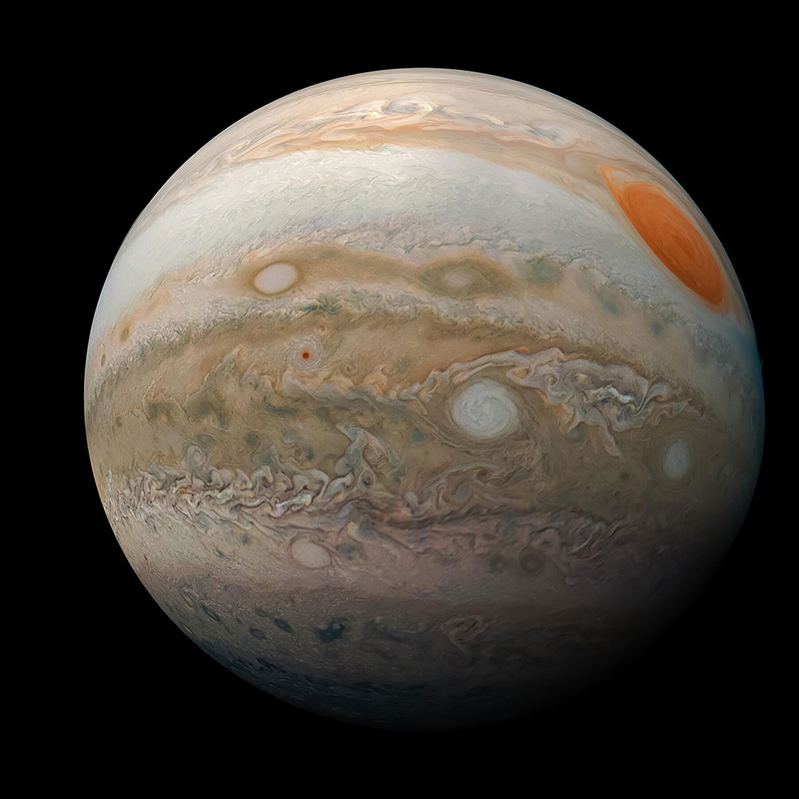
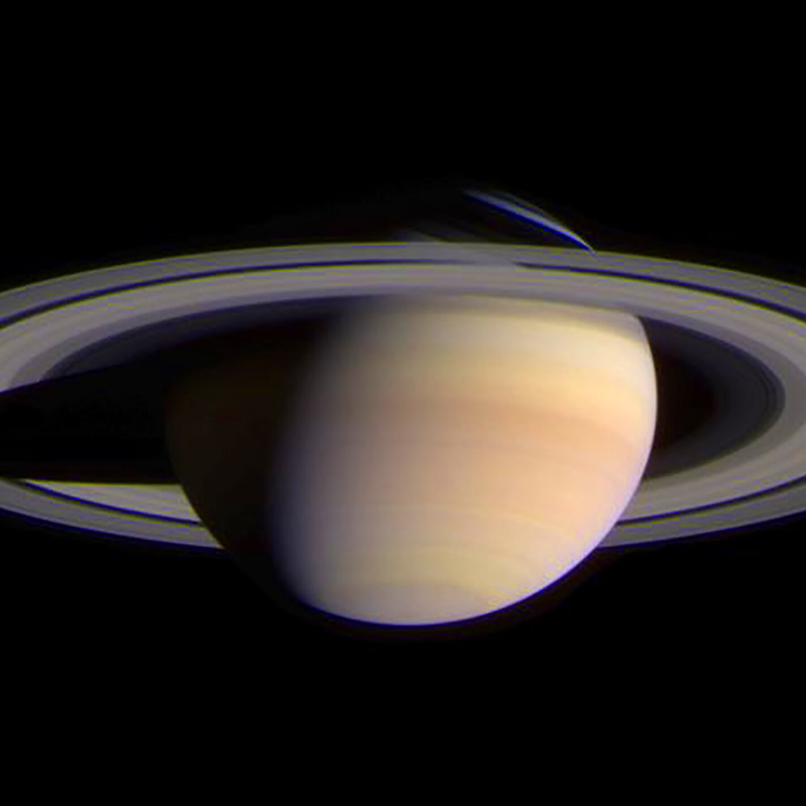
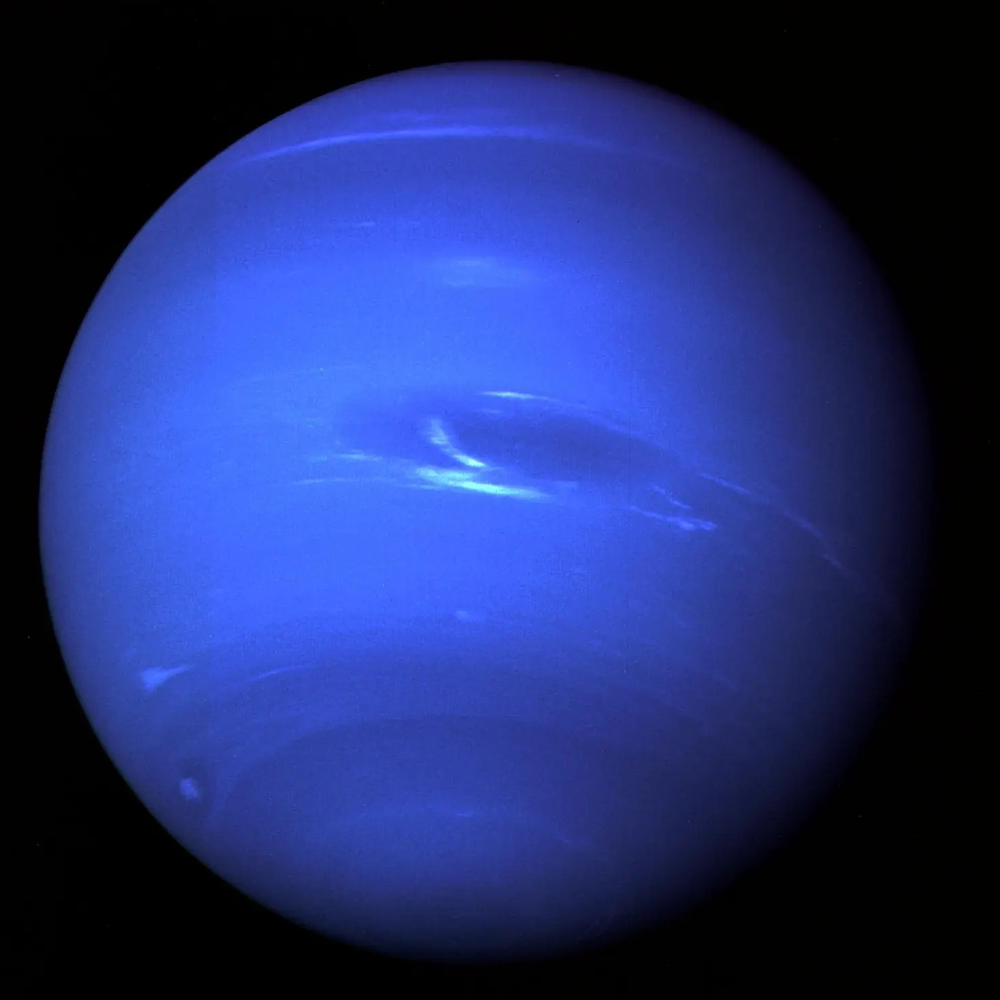

A comparison of the four outer planets of our solar system.
| Jupiter | Saturn | Uranus | Neptune | |
|---|---|---|---|---|
| Images |  |
 |
|
 |
| Namesake | Jupiter, being the biggest planet, gets its name from the king of the ancient Roman gods. | The farthest planet from Earth discovered by the unaided human eye, Saturn has been known since ancient times. The planet is named for the Roman god of agriculture and wealth, who was also the father of Jupiter. | William Herschel tried unsuccessfully to name his discovery Georgium Sidus after King George III. Instead, the planet was named for Uranus, the Greek god of the sky, as suggested by Johann Bode. | Galileo recorded Neptune as a fixed star during observations with his small telescope in 1612 and 1613. More than 200 years later, the ice giant became the first planet located through mathematical predictions rather than through regular observations of the sky. Because Uranus didn't travel exactly as astronomers expected it to, French mathematician Urbain Joseph Le Verrier proposed the position and mass of a then-unknown planet that could cause the observed changes to Uranus' orbit. Le Verrier sent his predictions to Johann Gottfried Galle at the Berlin Observatory, who found Neptune on his first night of searching in 1846. Seventeen days later, Neptune's largest moon Triton was discovered as well. |
| Formation | Jupiter took shape along with rest of the solar system about 4.6 billion years ago. Gravity pulled swirling gas and dust together to form this gas giant. Jupiter took most of the mass left over after the formation of the Sun, ending up with more than twice the combined material of the other bodies in the solar system. In fact, Jupiter has the same ingredients as a star, but it did not grow massive enough to ignite. About 4 billion years ago, Jupiter settled into its current position in the outer solar system, where it is the fifth planet from the Sun. | Saturn took shape when the rest of the solar system formed about 4.5 billion years ago when gravity pulled swirling gas and dust in to become this gas giant. About 4 billion years ago, Saturn settled into its current position in the outer solar system, where it is the sixth planet from the Sun. Like Jupiter, Saturn is mostly made of hydrogen and helium, the same two main components that make up the Sun. | Uranus took shape when the rest of the solar system formed about 4.5 billion years ago – when gravity pulled swirling gas and dust in to become this ice giant. Like its neighbor Neptune, Uranus likely formed closer to the Sun and moved to the outer solar system about 4 billion years ago, where it is the seventh planet from the Sun. | Neptune took shape when the rest of the solar system formed about 4.5 billion years ago when gravity pulled swirling gas and dust in to become this ice giant. Like its neighbor Uranus, Neptune likely formed closer to the Sun and moved to the outer solar system about 4 billion years ago. |
| Structure | The composition of Jupiter is similar to that of the Sun – mostly hydrogen and helium. Deep in the atmosphere, pressure and temperature increase, compressing the hydrogen gas into a liquid. This gives Jupiter the largest ocean in the solar system – an ocean made of hydrogen instead of water. Scientists think that, at depths perhaps halfway to the planet's center, the pressure becomes so great that electrons are squeezed off the hydrogen atoms, making the liquid electrically conducting like metal. Jupiter's fast rotation is thought to drive electrical currents in this region, with the spinning of the liquid metallic hydrogen acting like a dynamo, generating the planet's powerful magnetic field. Deeper down, Jupiter's central core had long been a mystery. Scientists theorized Jupiter was a mostly homogeneous mix of hydrogen and helium gases, surrounding a small, solid core of heavier elements – ice, rock, and metal formed from debris and small objects swirling around that area of the embryonic solar system 4 billion years ago. NASA’s Juno spacecraft, measuring Jupiter’s gravity and magnetic field, found data suggesting the core is much larger than expected, and not solid. Instead, it’s partially dissolved, with no clear separation from the metallic hydrogen around it, leading researchers to describe the core as dilute, or “fuzzy.” | Like Jupiter, Saturn is made mostly of hydrogen and helium. At Saturn's center is a dense core of metals like iron and nickel surrounded by rocky material and other compounds solidified by intense pressure and heat. It is enveloped by liquid metallic hydrogen inside a layer of liquid hydrogen –similar to Jupiter's core but considerably smaller. It's hard to imagine, but Saturn is the only planet in our solar system with an average density that is less than water. The giant gas planet could float in a bathtub if such a colossal thing existed. | Uranus is one of two ice giants in the outer solar system (the other is Neptune). Most (80% or more) of the planet's mass is made up of a hot dense fluid of "icy" materials – water, methane, and ammonia – above a small rocky core. Near the core, it heats up to 9,000 degrees Fahrenheit (4,982 degrees Celsius). Uranus is slightly larger in diameter than its neighbor Neptune, yet smaller in mass. It is the second least dense planet; Saturn is the least dense of all. Uranus gets its blue-green color from methane gas in the atmosphere. Sunlight passes through the atmosphere and is reflected back out by Uranus' cloud tops. Methane gas absorbs the red portion of the light, resulting in a blue-green color. | Neptune is one of two ice giants in the outer solar system (the other is Uranus). Most (80% or more) of the planet's mass is made up of a hot dense fluid of "icy" materials – water, methane, and ammonia – above a small, rocky core. Of the giant planets, Neptune is the densest. Scientists think there might be an ocean of super hot water under Neptune's cold clouds. It does not boil away because incredibly high pressure keeps it locked inside. |
| Size and Distance | With a radius of 43,440.7 miles (69,911 kilometers), Jupiter is 11 times wider than Earth. If Earth were the size of a grape, Jupiter would be about as big as a basketball. From an average distance of 484 million miles (778 million kilometers), Jupiter is 5.2 astronomical units away from the Sun. One astronomical unit (abbreviated as AU), is the distance from the Sun to Earth. From this distance, it takes sunlight 43 minutes to travel from the Sun to Jupiter. | With an equatorial diameter of about 74,897 miles (120,500 kilometers), Saturn is 9 times wider than Earth. If Earth were the size of a nickel, Saturn would be about as big as a volleyball. From an average distance of 886 million miles (1.4 billion kilometers), Saturn is 9.5 astronomical units away from the Sun. One astronomical unit (abbreviated as AU), is the distance from the Sun to Earth. From this distance, it takes sunlight 80 minutes to travel from the Sun to Saturn. | With an equatorial diameter of 31,763 miles (51,118 kilometers), Uranus is four times wider than Earth. If Earth was the size of a nickel, Uranus would be about as big as a softball. From an average distance of 1.8 billion miles (2.9 billion kilometers), Uranus is about 19 astronomical units away from the Sun. One astronomical unit (abbreviated as AU), is the distance from the Sun to Earth. From this distance, it takes sunlight 2 hours and 40 minutes to travel from the Sun to Uranus. | With an equatorial diameter of 30,775 miles (49,528 kilometers), Neptune is about four times wider than Earth. If Earth were the size of a nickel, Neptune would be about as big as a baseball. From an average distance of 2.8 billion miles (4.5 billion kilometers), Neptune is 30 astronomical units away from the Sun. One astronomical unit (abbreviated as AU), is the distance from the Sun to Earth. From this distance, it takes sunlight 4 hours to travel from the Sun to Neptune. |
| Orbit and Rotation | Jupiter has the shortest day in the solar system. One day on Jupiter takes 9.9 hours (the time it takes for Jupiter to rotate or spin around once), and Jupiter makes a complete orbit around the Sun (a year in Jovian time) in about 12 Earth years (4,333 Earth days). Its equator is tilted with respect to its orbital path around the Sun by just 3 degrees. This means Jupiter spins nearly upright and does not have seasons as extreme as other planets do. | Saturn has the second-shortest day in the solar system. One day on Saturn takes only 10.7 hours (the time it takes for Saturn to rotate or spin around once), and Saturn makes a complete orbit around the Sun (a year in Saturnian time) in about 29.4 Earth years (10,756 Earth days). Its axis is tilted by 26.73 degrees with respect to its orbit around the Sun, which is similar to Earth's 23.5-degree tilt. This means that, like Earth, Saturn experiences seasons. | One day on Uranus takes about 17 hours. This is the amount of time it takes Uranus to rotate, or spin once around its axis. Uranus makes a complete orbit around the Sun (a year in Uranian time) in about 84 Earth years (30,687 Earth days). Uranus is the only planet whose equator is nearly at a right angle to its orbit, with a tilt of 97.77 degrees. This may be the result of a collision with an Earth-sized object long ago. This unique tilt causes Uranus to have the most extreme seasons in the solar system. For nearly a quarter of each Uranian year, the Sun shines directly over each pole, plunging the other half of the planet into a 21-year-long, dark winter. Uranus is also one of just two planets that rotate in the opposite direction than most of the planets. Venus is the other. | One day on Neptune takes about 16 hours (the time it takes for Neptune to rotate or spin once). And Neptune makes a complete orbit around the Sun (a year in Neptunian time) in about 165 Earth years (60,190 Earth days). Sometimes Neptune is even farther from the Sun than dwarf planet Pluto. Pluto's highly eccentric, oval-shaped orbit brings it inside Neptune's orbit for a 20-year period every 248 Earth years. This switch, in which Pluto is closer to the Sun than Neptune, happened most recently from 1979 to 1999. Pluto can never crash into Neptune, though, because for every three laps Neptune takes around the Sun, Pluto makes two. This repeating pattern prevents close approaches of the two bodies. Neptune’s axis of rotation is tilted 28 degrees with respect to the plane of its orbit around the Sun, which is similar to the axial tilts of Mars and Earth. This means that Neptune experiences seasons just like we do on Earth; however, since its year is so long, each of the four seasons lasts for over 40 years. |
| Rings | Discovered in 1979 by NASA's Voyager 1 spacecraft, Jupiter's rings were a surprise. The rings are composed of small, dark particles, and they are difficult to see except when backlit by the Sun. Data from the Galileo spacecraft indicate that Jupiter's ring system may be formed by dust kicked up as interplanetary meteoroids smash into the giant planet's small innermost moons. | Saturn's rings are thought to be pieces of comets, asteroids, or shattered moons that broke up before they reached the planet, torn apart by Saturn's powerful gravity. They are made of billions of small chunks of ice and rock coated with other materials such as dust. The ring particles mostly range from tiny, dust-sized icy grains to chunks as big as a house. A few particles are as large as mountains. The rings would look mostly white if you looked at them from the cloud tops of Saturn, and interestingly, each ring orbits at a different speed around the planet. Saturn's ring system extends up to 175,000 miles (282,000 kilometers) from the planet, yet the vertical height is typically about 30 feet (10 meters) in the main rings. Named alphabetically in the order they were discovered, the rings are relatively close to each other, with the exception of a gap measuring 2,920 miles (4,700 kilometers) in width called the Cassini Division that separates Rings A and B. The main rings are A, B, and C. Rings D, E, F, and G are fainter and more recently discovered. Starting at Saturn and moving outward, there is the D ring, C ring, B ring, Cassini Division, A ring, F ring, G ring, and finally, the E ring. Much farther out, there is the very faint Phoebe ring in the orbit of Saturn's moon Phoebe. | Uranus has two sets of rings. The inner system of nine rings consists mostly of narrow, dark grey rings. There are two outer rings: the innermost one is reddish like dusty rings elsewhere in the solar system, and the outer ring is blue like Saturn's E ring. In order of increasing distance from the planet, the rings are called Zeta, 6, 5, 4, Alpha, Beta, Eta, Gamma, Delta, Lambda, Epsilon, Nu, and Mu. Some of the larger rings are surrounded by belts of fine dust. | Neptune has at least five main rings and four prominent ring arcs that we know of so far. Starting near the planet and moving outward, the main rings are named Galle, Leverrier, Lassell, Arago, and Adams. The rings are thought to be relatively young and short-lived. Neptune's ring system also has peculiar clumps of dust called arcs. Four prominent arcs named Liberté (Liberty), Egalité (Equality), Fraternité (Fraternity), and Courage are in the outermost ring, Adams. The arcs are strange because the laws of motion would predict that they would spread out evenly rather than stay clumped together. Scientists now think the gravitational effects of Galatea, a moon just inward from the ring, stabilizes these arcs. |
| Moons | With four large moons and many smaller moons, Jupiter forms a kind of miniature solar system. Jupiter has 95 moons that are officially recognized by the International Astronomical Union. The four largest moons – Io, Europa, Ganymede, and Callisto – were first observed by the astronomer Galileo Galilei in 1610 using an early version of the telescope. These four moons are known today as the Galilean satellites, and they're some of the most fascinating destinations in our solar system. Io is the most volcanically active body in the solar system. Ganymede is the largest moon in the solar system (even bigger than the planet Mercury). Callisto’s very few small craters indicate a small degree of current surface activity. A liquid-water ocean with the ingredients for life may lie beneath the frozen crust of Europa, the target of NASA's Europa Clipper mission slated to launch in 2024. | Saturn is home to a vast array of intriguing and unique worlds. From the haze-shrouded surface of Titan to crater-riddled Phoebe, each of Saturn's moons tells another piece of the story surrounding the Saturn system. As of June 8, 2023, Saturn has 146 moons in its orbit, with others continually awaiting confirmation of their discovery and official naming by the International Astronomical Union (IAU). | Uranus has 28 known moons. While most of the satellites orbiting other planets take their names from Greek or Roman mythology, Uranus' moons are unique in being named for characters from the works of William Shakespeare and Alexander Pope. All of Uranus' inner moons appear to be roughly half water ice and half rock. The composition of the outer moons remains unknown, but they are likely captured asteroids. | Neptune has 16 known moons. Neptune's largest moon Triton was discovered on Oct. 10, 1846, by William Lassell, just 17 days after Johann Gottfried Galle discovered the planet. Since Neptune was named for the Roman god of the sea, its moons are named for various lesser sea gods and nymphs in Greek mythology. Triton is the only large moon in the solar system that circles its planet in a direction opposite to the planet's rotation (a retrograde orbit), which suggests that it may once have been an independent object that Neptune captured. Triton is extremely cold, with surface temperatures around minus 391 degrees Fahrenheit (minus 235 degrees Celsius). And yet, despite this deep freeze at Triton, Voyager 2 discovered geysers spewing icy material upward more than 5 miles (8 kilometers). Triton's thin atmosphere, also discovered by Voyager, has been detected from Earth several times since, and is growing warmer, but scientists do not yet know why. |